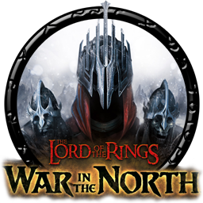
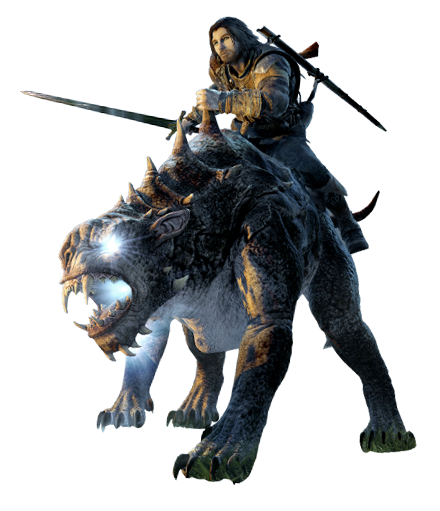
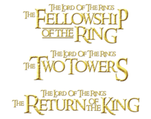

O Senhor dos Anéis: Guerra no Norte
 Baseado na obra de J.R.R. Tolkien, Senhor dos Anéis: A Guerra do Norte é um jogo de aventura paralelo aos acontecimentos da trilogia original. O game agrada tanto fãs da obra quanto os amantes de jogos de RPG. Passados dez anos desde que a trilogia O Senhor dos Anéis chegou aos cinemas de todo o mundo, finalmente os fãs da franquia encontraram um game pelo qual J.R.R. Tolkien ficaria muito orgulhoso.
Para isso, não foram poucas as tentativas. A série já foi transformada em um jogos de ação, aventura, estratégia e até um RPG em turnos. Porém, nenhum foi digno de elogios, e acabaram criticados pela mídia especializada e até mesmo pelos próprios fãs. Entretanto, como diria o ditado "água mole e pedra dura, tanto bate até que fura", em Senhor dos Anéis: A Guerra do Norte, tudo parece dar certo. O jogo corrige todos os erros do passado, além de utilizar tudo o que há de ponta em relação à tecnologia dos consoles atuais para produzir uma aventura que encanta pelos gráficos, pelo enredo original e por uma jogabilidade simples e agradável.
A história de Senhor dos Anéis: A Guerra do Norte é paralela à trilogia original. Os três aventureiros Eradan, Farin e Andriel partem da cidade de Bri semanas antes de Frodo iniciar sua missão de destruir o anel. Além dos acontecimentos serem paralelos à história original da obra de Tolkien, os ilustres personagens da série acabam participando em atuações coadjuvantes. Com isso, o jogador precisará ajudar Aragon, Legolas e até mesmo Frodo, cumprindo missões secundárias.
O Senhor dos Anéis: Sombras de Mordor
 Shadow of Mordor é um Action RPG (como julgo que todos os jogos de acção são ultimamente), que chegou em 2014 e, antes mesmo de poder afirmar fosse o que fosse, foi obrigado a vencer o cepticismo que o rodeava. Baseado numa das sagas mais amadas por todo o Mundo, a saga de Tolkien: Senhor dos Anéis, Middle Earth: Shadow of Mordor herdou o peso de tentar ser original numa altura em que pouco ou nada original saiu no mercado e quando tudo parecia já ter sido feito à volta desta tão amada saga.
Afinal, não falamos de uma história e saga qualquer – Tolkien criou uma Universo onde as suas regras se expandiram bem para além dos seus livros. Quer dizer: é óbvio que os anões são excelentes ferreiros e vivem em cavernas dentro de montanhas, certo? Os humanos são excelentes guerreiros com características que se adaptam perfeitamente ao escudo e espada, os elfos são fantásticos arqueiros e assassinos das sombras com propensão para a magia e os magos, susceptíveis a ataques mais físicos. Isto são “regras” criadas nas personagens deste fabuloso escritor nascido na África do Sul. Destas “regras” nasceram universos como World of Warcraft, Skyrim, Dragon Age, e outros tantos incontáveis universos que tantos fãs semeiam ao longo dos anos. Com uma herança deste nível nos seus ombros, não seria fácil para a Monolith Productions, desenvolver algo original e inovador, que fizesse o jogador sentir que vivia por dentro do universo de Senhor dos Anéis.
Mas a sua parte técnica, que é efectivamente Muito Boa e um avanço no mundo dos videojogos, é o que menos me seduz em Shadow of Mordor. Este é, efectivamente, um jogo Brutal e Imersivo. Para quem, como eu, se transporta para um livro ou filme quando lê ou vê algo deste género, Middle Earth: Shadow of Mordor põe-nos mesmo lá. Desde os primeiros instantes em que conhecemos Talion (trazido à vida pela voz única de Troy Baker) e a sua família, sentimos que vivemos uma história também ela certamente escrita por Tolkien… apenas talvez deixada fora dos livros. Uma história de vingança e dor, como tantas outras histórias, mas sobretudo uma história de redenção, salvação e procura de identidade verdadeira de ambos os personagens. Esta é uma história que parece nova, mas saída do Universo que tanto Amamos.A visceralidade e brutalidade do combate é tão satisfatória que dei por mim a fazer dezenas de missões secundárias apenas para poder ver e rever os cruéis finisher moves de Talion. Quando estamos assoberbados de inimigos, com a vida quase a terminar, temos um milésimo momento de retaliação fechado num Quick Time Event, mas este está tão bem integrado, que sentimos uma verdadeira urgência em pressionar o botão certo. É que o preço da morte em Shadow of Mordor é muito alto: cada vez que perdemos a vida, o inimigo que nos mata sobe no ranking de generais e comandantes do exército das trevas, o que faz com que este adquira mais poderes e se torne mais forte (um “presente” do sistema Nemesis). Mas o confronto seguinte é absolutamente delicioso de se observar – o general que outrora nos derrotou, lembra-se de nós, provoca-nos e torna esse encontro algo que se torna, para o jogador, verdadeiramente pessoal. Dei por mim muitas vezes a gritar, como uma verdadeira guerreira em mundos longíquos, quando finalmente matava alguém que me derrotou em momentos anteriores.
Este não é um jogo perfeito. Por vezes, torna-se muito repetitivo. Se forem como eu, e quiserem fazer todas as missões secundárias, matar todos os generais antes de avançarem para o primeiro Boss, começam a perceber que esta é, por assim dizer, uma tarefa impossível. Os generais são constantemente substituídos e substuídos, até desistirmos e simplesmente avançarmos para o Boss. E isto, para alguém que é intrinsecamente obsessiva como eu, incomoda. Incomoda muito. Sinto que avanço com algo incompleto. Porque é que não é possível simplesmente acabar com todos os generais de um território, por mais que isso demore e custe? Isto pode parecer estúpido, mas foi algo bastante negativo para mim. Senti que estes comandantes infindáveis eram nada mais que um desnecessário “filler” para aumentar o tempo de jogo. As missões alternativas por vezes perdem o foco na história e dão igualmente a sensação de serem nada mais que um prolongamento forçado de um jogo que não necessitaria disso para ser Excelente.
